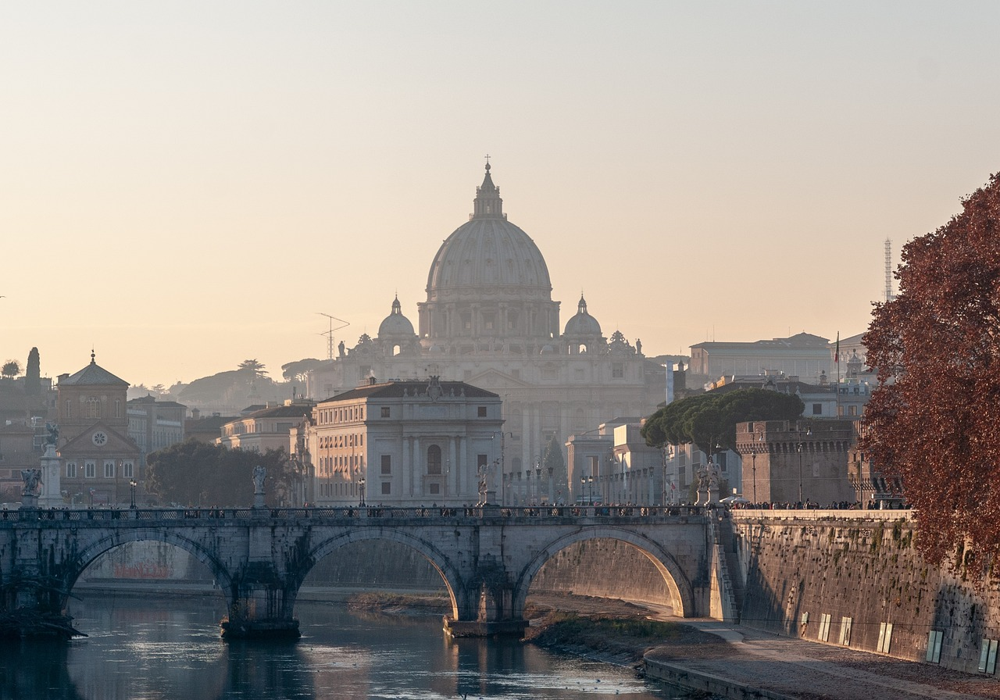

ROME
La Ville éternelle, en italien Roma, est le surnom emblématique de Rome. Cette appellation a traversé les siècles, glorifiant la grandeur et la pérennité de cette ville fascinante. Voici pourquoi Rome est surnommée la « ville éternelle » Fondée en 753 av-J-C., Rome a été le cœur de la civilisation romaine pendant des siècles. Elle a influencé la politique, la religion, l'art et l'architecture de l'Empire romain. Pour plonger dans cette époque, visitez les principaux sites antiques tels que le Colisée, le Forum Romain et le Mont Palatin.
Le Colisée

Symbole de la puissance de l'Empire romain, le Colisée est l'un des sites les plus visités de Rome. Imaginez les acclamations de la foule lors des combats de gladiateurs et des spectacles de chasse dans cet édifice gigantesque qui pouvait accueillir jusqu'à 50 000 personnes. À l'origine, il était appelé amphithéâtre Flavien ou amphitheatrum Flavium en latin. Le Colisée a été utilisé pour les venationes (combats d'animaux sauvages), les munera (combats de gladiateurs) et d'autres spectacles publics. Il a également servi pour des exécutions de condamnés à mort et des reconstitutions de batailles célèbres. Il est resté en service pendant près de 500 ans, les derniers jeux se prolongeant jusqu'au VIe siècle. Aujourd'hui, le Colisée est l'un des symboles de la Rome moderne et l'une des attractions touristiques les plus populaires, accueillant environ 7,6 millions de visiteurs chaque année.
le Forum Romain
Le Forum romain, en italien Foro Romano, est un site archéologique situé entre les collines du Capitole et du Mont Palatin à Rome.
Le Forum romain, également appelé Forum Magnum (« Grand Forum ») ou Forum Vetus (« Vieux Forum »), est la place principale de la Rome antique.
Son importance historique, religieuse et politique en fait l'endroit autour duquel toute la vie de la ville s'articule : célébration de mariages, organisation de jeux, de combats de gladiateurs, de cérémonies et de fêtes religieuses, de défilés militaires (sur la Via Sacra), de proclamations politiques (par exemple lors de la crémation de Jules César, en ce même lieu)…
Il est le centre vivant de la ville, à l'image de l'agora, lieu de rassemblement politique et mercantile des cités grecques.
Le Forum romain est un témoignage fascinant de l'histoire ancienne de Rome, où les vestiges des temples,
des basiliques et des monuments racontent une époque révolue.
le Mont Palatin
Le Mont Palatin, en italien Roma, est une des sept collines de Rome. Il occupe une position centrale dans la Rome antique, dont c'est l'une des parties les plus anciennes. Le Mont Palatin est constitué de deux sommets distincts : Le Germal (Cermalus) à l'ouest, qui culmine à 51 mètres. Le Palatual (Palatium) à l'est, qui culmine à 51,2 mètres. Il donne sur le Forum Romain au nord et sur le Circus Maximus au sud.
Rome est une ville qui offre aux visiteurs une expérience unique, mêlant antiquité et modernité, art et gastronomie, spiritualité et divertissement par la conservation de son riche patrimoine historique et artistique, témoignant de son passé glorieux et de sa diversité culturelle.